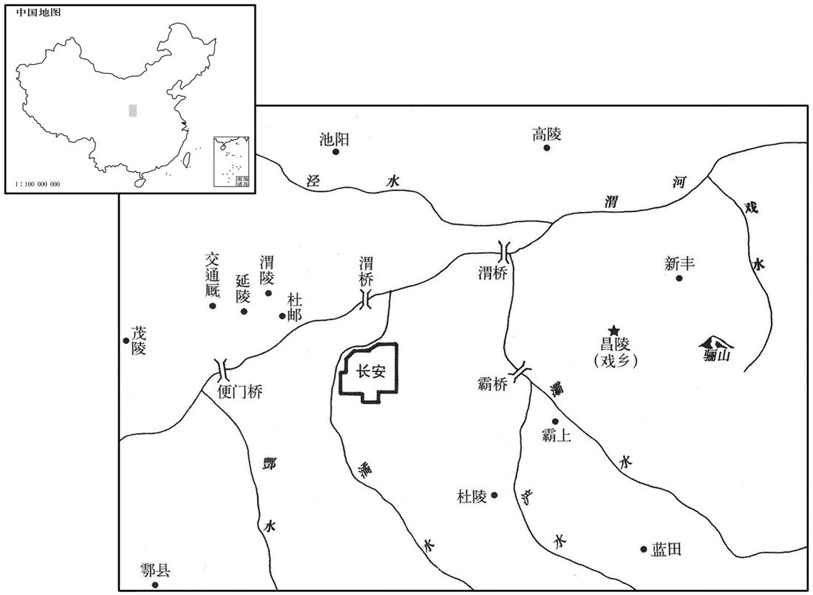

公元前20年资治通鉴：本年记事、原文与白话对照
按原书编年位置阅读；追叙和史论不等于本年发生的事件。白话采用所据译本，缺译不以生成译文补齐。
卷31 · 本年记事
公元前20年 · 汉孝成皇帝鸿嘉元年
鸿嘉元年〔（辛丑，前二〇）〕
上传原文的注释括号有异常，字符原样保留；无法可靠划分的段落默认全文显示。
本年事件索引（现代整理）

本年形势与背景参考图
春，正月，癸巳，以薛宣为御史大夫。〔用谷永之言也。〕
春季，正月，癸巳（初九），任命薛宣为御史大夫。
二月，壬午，上行幸初陵，赦作徒；〔师古曰：徒人之在陵役作者。〕以新丰之戏乡为昌陵县，〔师古曰：戏水之乡也。戏，音许宜翻。〕奉初陵。
二月，壬午（二十八日），成帝前往自己的陵墓初陵，赦免在墓园作工的刑徒。把新丰的戏乡改为昌陵县，以供奉初陵。
上始为微行，〔张晏曰：出入市里，不复警跸，若微贱者之所为，故曰微行。〕从期门郎或私奴十余人，或乘小车，或皆骑，〔骑，奇寄翻。〕出入市里郊野，远至旁县〔旁县，诸县环长安旁者也。〕甘泉、长杨、五柞，〔柞，才各翻。〕鸡、走马，常自称富平侯家人。富平侯者，张安世四世孙放也。放父临，尚敬武公主，〔文颖曰：公主，成帝姊也。臣瓒曰：敬武公主是元帝姊也。师古曰：二说皆非也。薛宣传云：主怒曰：「嫂何以取妹杀之！」既谓元后为嫂，是即元帝妹也。地理志，巨鹿郡有敬武县。〕生放，放为侍中、中郎将，娶许皇后女弟，当时宠幸无比，故假称之。
成帝开始微服出行，跟随的期门郎或私奴有十余人，或乘小车，或全部骑马，出入市内街巷和郊野，远到邻县的甘泉、长杨、五柞，斗鸡走马，成帝还常自称是富平侯家人。所谓富平侯，是张安世的四世孙张放。张放的父亲张临，娶敬武公主为妻，生下张放。张放为侍中、中郎将，娶许皇后的妹妹为妻，当时所受荣宠，没有可以比得上的。因此成帝假称自己是富平侯家人。
三月，庚戌，张禹以老病罢，以列侯朝朔、望，位特进，见礼如丞相；〔朝，直遥翻。〕赏赐前后数千万。
三月，庚戌（二十七日），张禹因年老多病免官，以列侯的身分，在每月一日、十五日朝见皇帝，并加位特进，朝见时的礼节一如丞相，前后赏赐数千万钱。
夏，四月，庚辰，薛宣为丞相，封高阳侯；〔恩泽侯表，高阳侯食邑于东莞。〕京兆尹王骏为御史大夫。
夏季，四月，庚辰（二十七日），任命薛宣为丞相，封高阳侯。任命京兆尹王骏为御史大夫。
王音既以从舅越亲用事，小心亲职。〔从，才用翻。〕上以音自御史大夫入为将军，〔将军，中朝官，故曰入，不获宰相之封，〔自公孙弘以来，为相者封侯。〕六月，乙巳，封音为安阳侯。〔地理志，汝南郡有安阳侯国。〕
王音既然以堂舅的身份，超过其他亲舅得到重用，因而小心供职。成帝因王音是从御史大夫直接擢升为将军，没有得到宰相应当封的爵位。六月，乙巳（疑误），封王音为安阳侯。
冬，黄龙见真定。〔见，贤遍翻。〕
冬季，真定发现黄龙。
是岁，匈奴复株累单于死，弟且麋〔【章十四行本「麋」作「糜」；乙十一行本同；孔本同。】〕胥立，为搜谐若鞮单于；遣子左祝都韩王呴留斯侯入侍，以且莫车为左贤王。〔累，力追翻。单，音蝉。且，子余翻。鞮，丁兮翻。「呴」，汉书作「朐」；师古曰：音许于翻。〕
本年，匈奴复株累单于去世，弟弟且麋胥继位，为搜谐若单于。单于派遣儿子左祝都韩王留斯侯到长安，作为人质侍奉汉皇。单于又任命且莫车为左贤王。